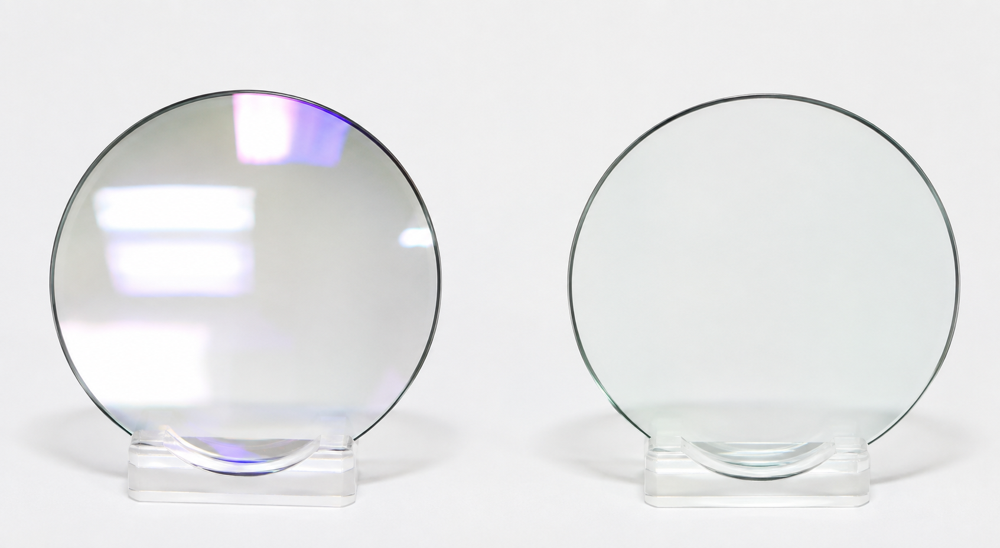
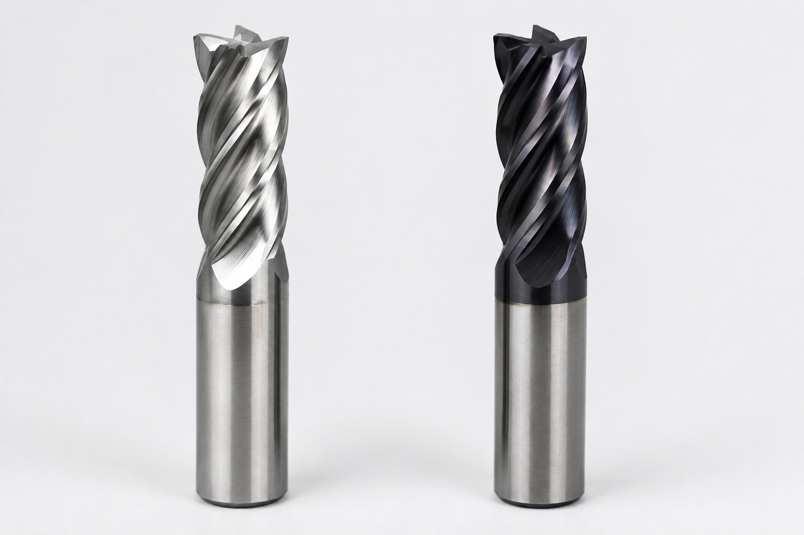
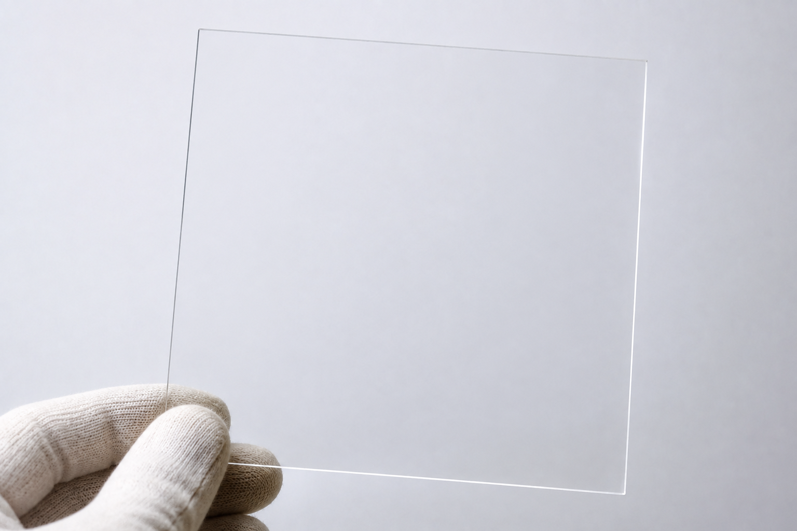
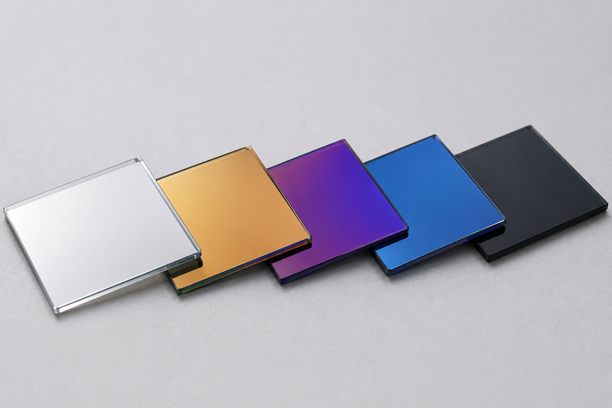

光
反射を少なくする
レンズ表面に薄膜をつけることで、光の反射を抑え、見えやすくすることができます。
薄膜は、ただ表面をおおうだけではありません。とても薄い膜でも、表面に新しい働きを加えることができます。

レンズ表面に薄膜をつけることで、光の反射を抑え、見えやすくすることができます。

工具の表面に硬い薄膜をつけることで、摩耗を抑え、表面を守ることができます。

透明な導電性の薄膜を使うと、光を通しながら電気を流すことができます。ディスプレイなどに使われています。

薄膜の材料や厚さによって、表面の色や光の見え方を変えることもできます。